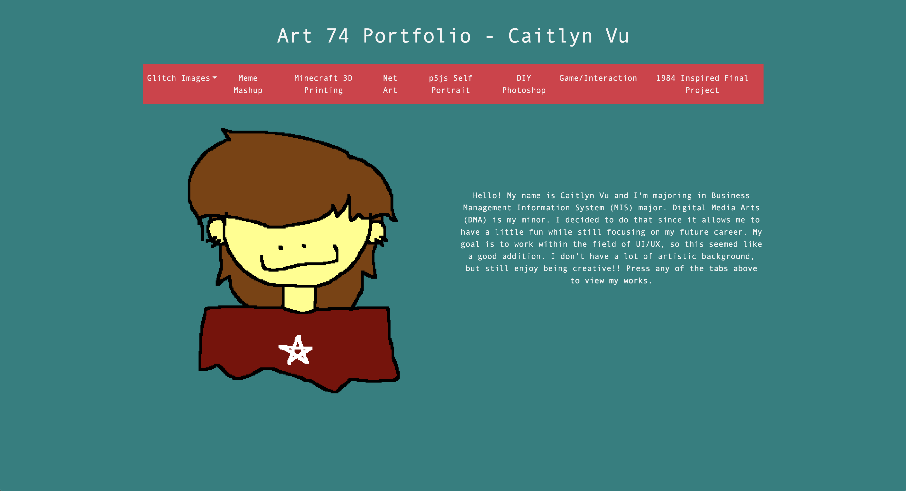
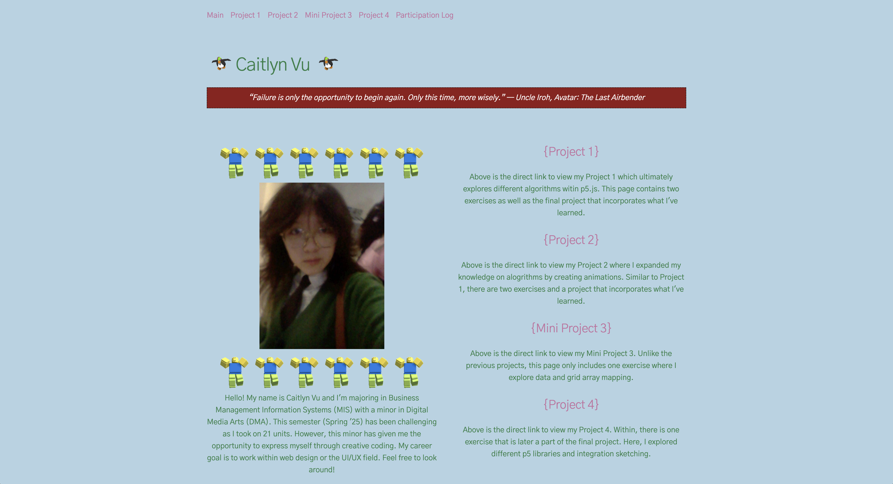

Projects
Art 74 Portfolio

Click on the image above to be redirected to the portfolio.
This is a portfolio I created in my second year for my minor. Some of the works include usage of Photoshop, 3D printing, p5.js, and HTML. The website itself is hand coded with HTML and Bootstrap.
Art 101 Portfolio

Click on the image above to be redirected to the portfolio.
I was enrolled in ART 101, which further my knowledge on digital media art. I developed my skills within p5.js, HTML, and CSS. Below is the link to portfolio for the class that explores all the projects completed.